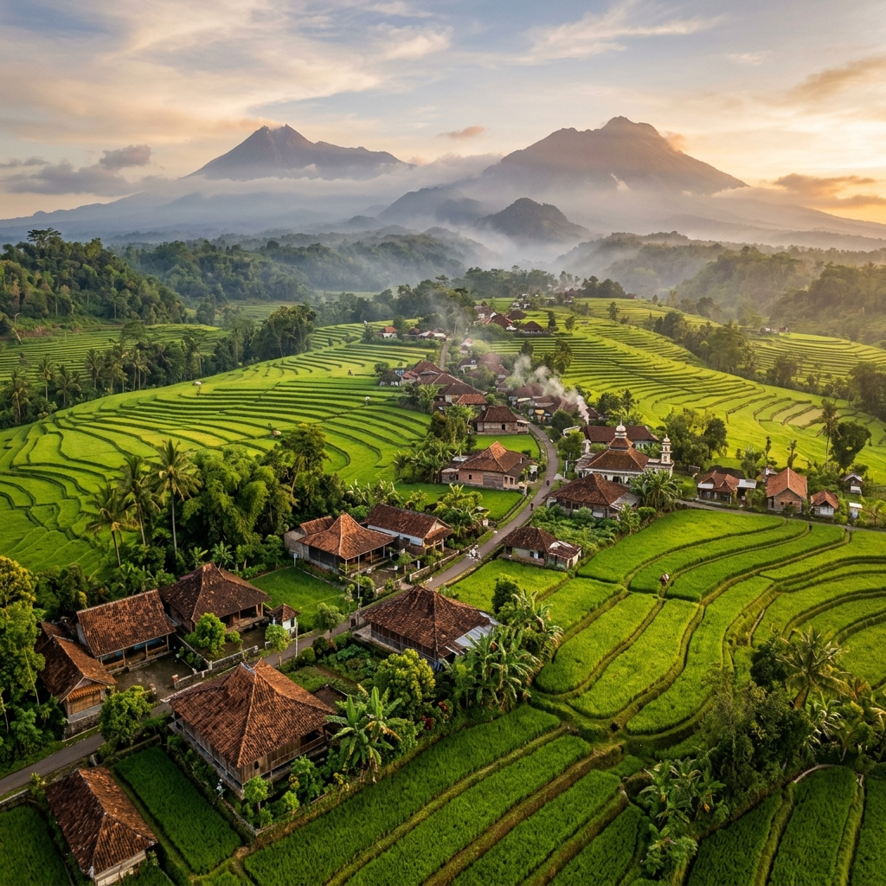
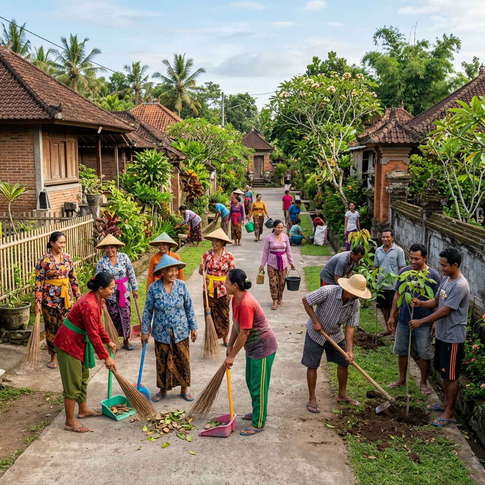
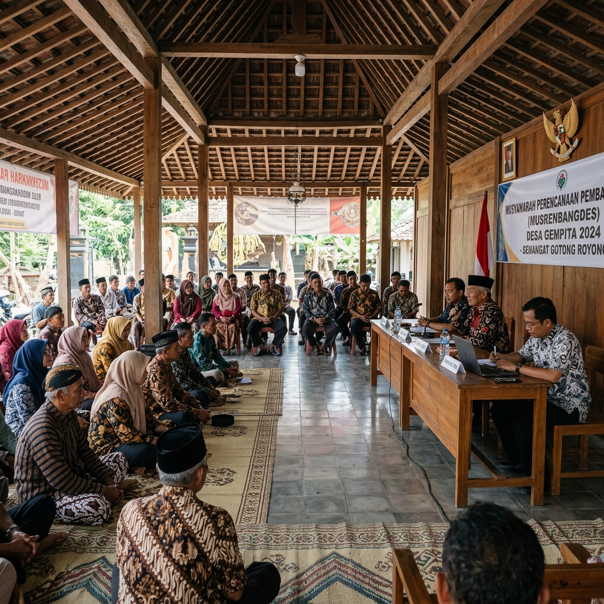
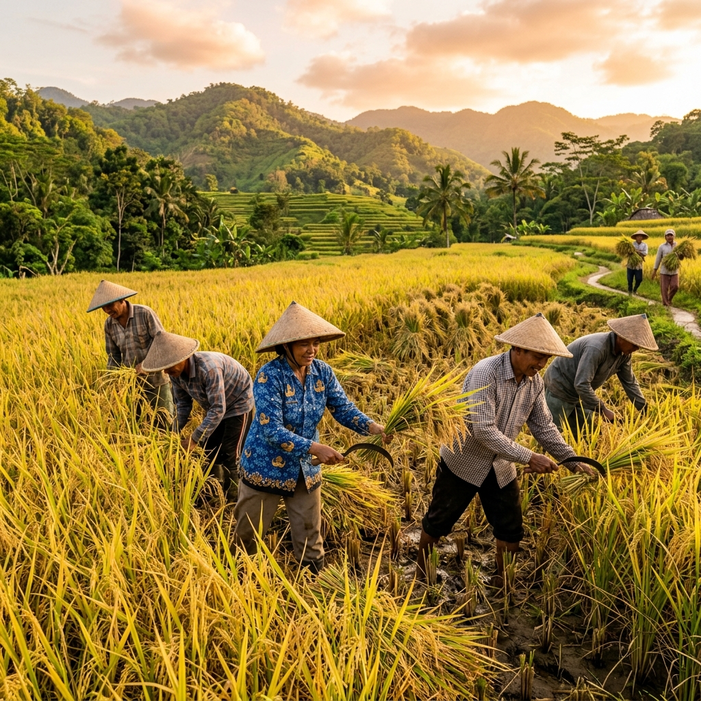
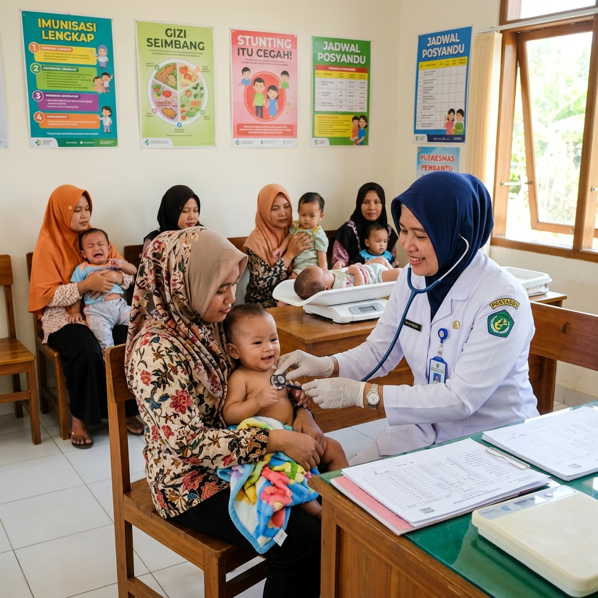
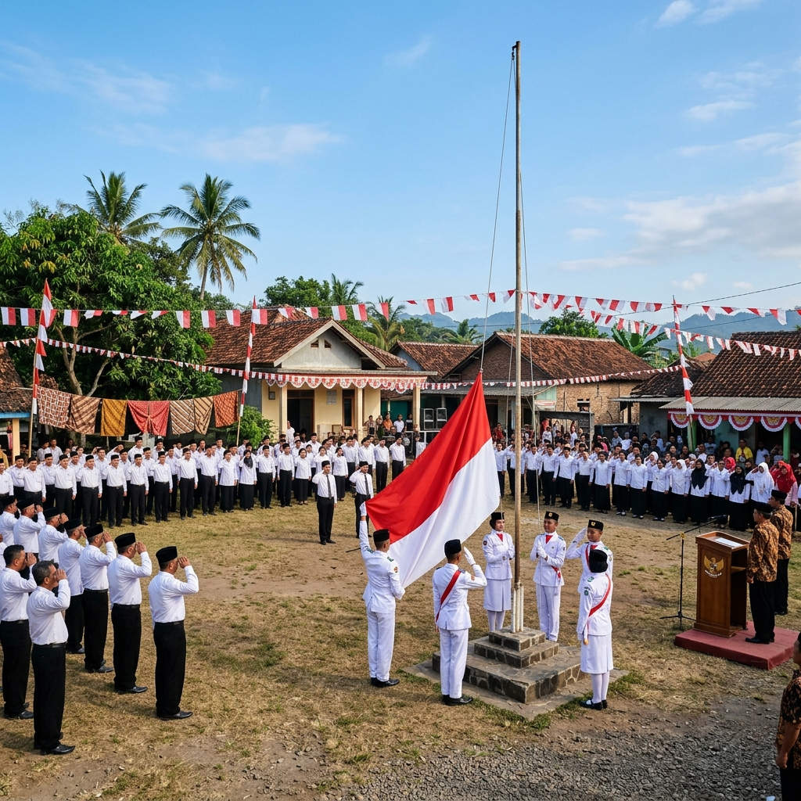
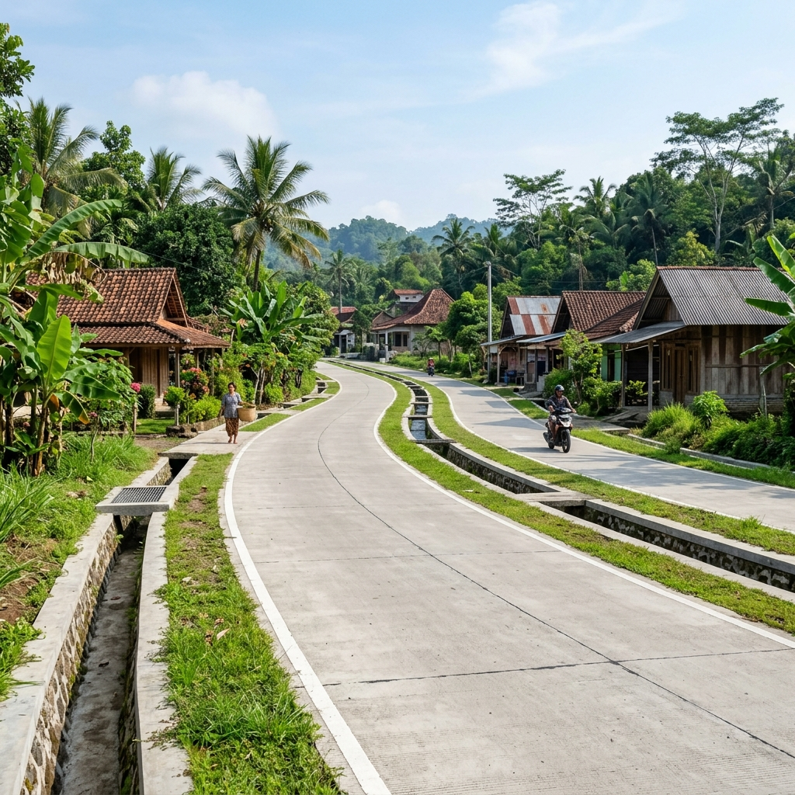

Membangun desa yang maju, sejahtera, dan berbudaya melalui gotong royong dan pelayanan prima bagi seluruh masyarakat.
Berbagai layanan administrasi kependudukan yang tersedia di kantor Rw Cieurih
Surat keterangan domisili, usaha, tidak mampu, dan berbagai keperluan administrasi lainnya.
Selengkapnya →Surat keterangan domisili untuk keperluan pekerjaan, pendidikan, dan administrasi resmi.
Selengkapnya →Pengurusan pembuatan baru, perubahan, dan penambahan anggota Kartu Keluarga.
Selengkapnya →Pengantar surat pembuatan akta kelahiran untuk pendaftaran di Disdukcapil.
Selengkapnya →Surat keterangan usaha untuk keperluan perizinan dan pengembangan UMKM desa.
Selengkapnya →Surat pengantar untuk berbagai keperluan ke instansi pemerintah tingkat kecamatan dan kabupaten.
Selengkapnya →Informasi terbaru seputar kegiatan dan program pembangunan Desa Sukamaju

KegiatanWarga RT 05 Desa Sukamaju mengadakan kegiatan gotong royong membersihkan lingkungan desa dan penanaman pohon di sepanjang jalan utama.
Baca selengkapnya →
PemerintahanPemerintah Desa Sukamaju menggelar musyawarah desa untuk membahas rencana pembangunan infrastruktur dan program pemberdayaan masyarakat.
Baca selengkapnya →
PertanianProgram intensifikasi pertanian berhasil meningkatkan hasil panen padi sebesar 15% dibanding musim tanam sebelumnya.
Baca selengkapnya →Dokumentasi kegiatan dan kehidupan masyarakat Kampung Cieurih



Tim pelayanan kampung siap membantu Anda. Hubungi kami atau kunjungi Rw Cieurih pada jam kerja.